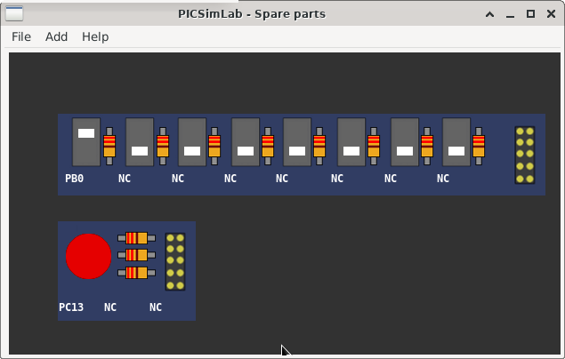
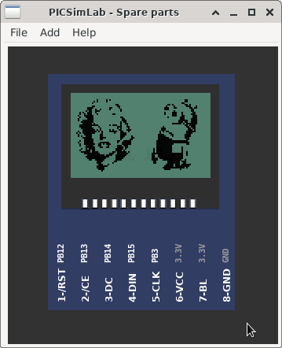
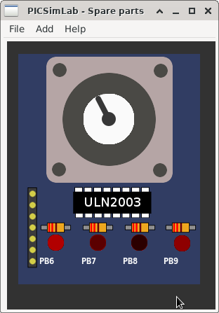
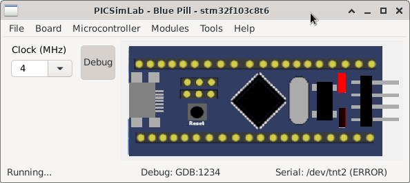

[stm32f103c8t6/GPIO] STM32 GPIO ExampleOriginal Link: https://blog.avislab.com/stm32-gpio/Source code | |
|  | Download (pzw) |
[stm32f103c8t6/Nokia5110] STM32 Nokia 5110 LCD ExampleOriginal Link: https://blog.avislab.com/category/stm32/Source code | |
|  | Download (pzw) |
[stm32f103c8t6/StepMotor] STM32 Step Motor ExampleOriginal Link: https://blog.avislab.com/category/stm32/Source code | |
|  | Download (pzw) |
[stm32f103c8t6/SysTick] STM32 SysTick ExampleOriginal Link: https://blog.avislab.com/stm32-systick/Source code | |
|  | Download (pzw) |